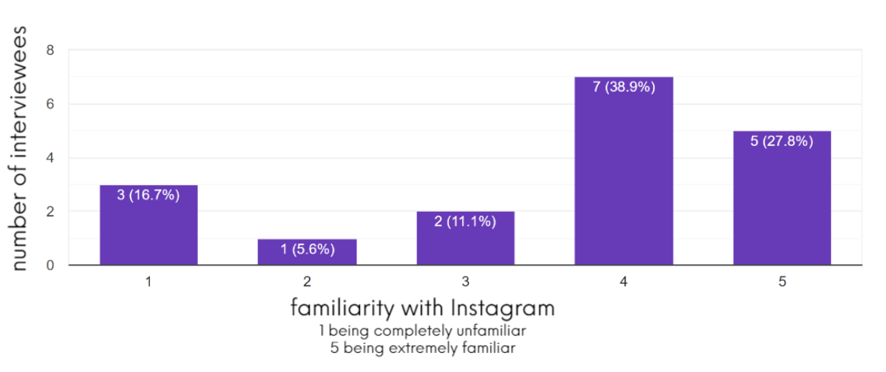
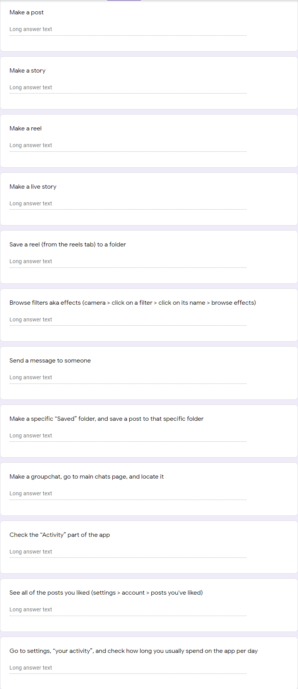
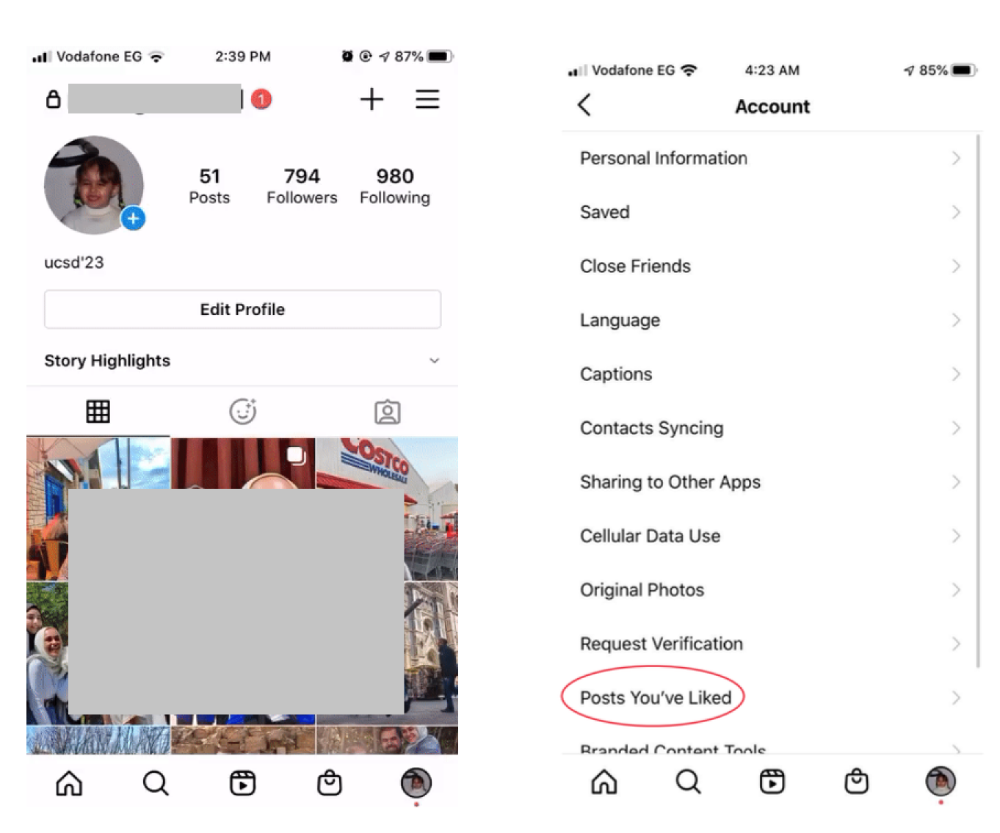
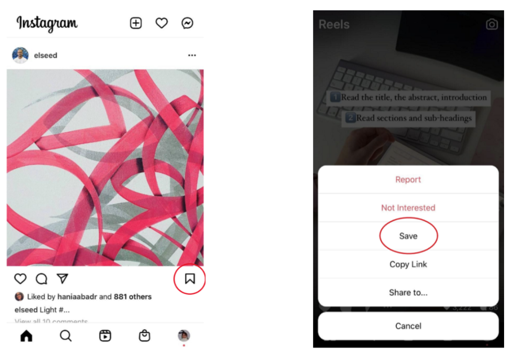

I collaborated with a team of five in my course to observe and
interview users of a product of our choice to identify the root
causes of problems, analyze your data, and propose a redesign. This
project allowed me to grow my communication skills through working
with a group and interviewing users, expanding my design skills
through creating Figma prototypes, and expanded my HCI skillset. All
of this was done with a 1 week deadline.
My group and I crafted a mind map where we put our heads together
and tried to come up with different applications we could a redesign
of. Ultimately, we chose Instagram because it had recently pushed
out a massive update that rearranged icons and added new
functionality pages.
My contributions
As a group, our goal was to discover pain points and redesign to
nullify them as best as possible. I created a questionnaire that we
sent out in order to get demographic info, conducted 3 interviews
with users, and contributed to prototypes made in
Figma. I also participated in the ideation process
where we decided which prototype to proceed with and why.
By emphasizing the reels and shop tabs on the new Instagram update
and minimizing tabs which are conducive to positive user social
interactions, designers have hindered the user’s mental model.
User research
My team and I were interested in seeing if there was a way to
incorporate the new Instagram changes in a way that was not only
clearer for old users who had been used to the previous design, but
also new users who are discovering the new features.
Research Goals
1. Identify the user demographic
2. Identify users's goals and motivation for using Instagram
3. Determine how the new Instagram update has been received
4. Discover user pain points
The survey was used to gather demographic information about our
participants, as well as how familiar they are with the app. My
teammates came up with the questions and I transferred them to a
Google form. The survey itself wasn't that long because we just
wanted simple demographic information and we didn't want people to
feel burdened to take a 10+ question survey. The link was shared
with different UCSD students and staff members through mass emailing
different groups.

Figure 4: The level of familiarity that our survey
participants have with Instagram. (Click here for full size)
Each member of our team conducted 3 one-on-one interviews with each
of the survey participants, totalling
18 interviews. We prepared a list of tasks that we
felt would test the user's knowledge of the app and how the app
presents itself. We also included tasks that focused on the new
additions to the app: the Reels and Shop pages. Adhering to the
master-apprentice model, we left the interviewees to share their
thoughts freely without any guidance that is too specific.
Due to the Covid-19 pandemic, these were conducted through
Zoom.

Figure 4: Tasks performed during direct
observation. Note, this form
was not provided to any participant. It was only
accessible to interviews for recording convenience. Each interviewer
filled in what they saw, heard, and anything else of note. (
Click here for full size)
Key Trends
One key trend we noticed through our observations were that the vast
majority of users didn't use the shop tab at all. In order to
understand why, we asked what the user's main use for Instagram was.
From our findings listed below, we determined that the shop tab
isn't viewed as important because it doesn't follow what users use
Instagram for.
Another trend we noticed through our observations were that there
were a lot of features in the app that were unknown to the user.
From our post observation interviews, we determined that this was
not only because Instagram had so many features that ended up being
hidden away, but also they lack clear signifiers for where to find
the features. For example,
1/3 of users couldn't figure out how to find all the posts
they've liked because it's hidden deep in their account
settings.
Again, our post observation interviews told us that users didn't
expect viewing liked posts to be in a settings page, especially
since there is already a "like" on the top left of the page.

Figure 6: Steps that a user had to take in order to
find the "posts you've liked" page (
Click here for full size
)
Additionally, another trend we discovered was that a lot of users
ran into difficulty when it came to uploading a post, reel, going
live, or posting a story. One user mentioned that they always made
mistakes whenever they wanted to post something because of how many
different ways there were. Swiping right from the feed presents a
designated area to upload a post, reel, live story, or story.
However making a post, story and reel have their own dedicated
buttons on the app.
The last major trend that we noticed was that users generally had
difficulty in dealing with reels. In our post observation
interviews, 13/18 said that dealing with reels was
the most difficult task in the whole interview.
From these interviews, we concluded that
the problem was that the process of saving Reels was completely
different than saving posts.
In order to save a post the user has to click on the bookmark icon
to save it. However the method to achieve the same things under both
tabs was inconsistent; there was no bookmark icon to save a reel,
therefore the users were confused and had a lot of difficulty being
able to save a reel.

Figure 8: The location of the save icon between
posts (left) and reels (right) (
Click here for full size
)
Findings
From our observation findings and post observational interviews, I
was able to draw conclusions.
The process of doing a task on screen should be the same as the
process of doing that same task on a different screen; hence,
issues with saving Reels could be mitigated
Most users aren't using Instagram to directly purchase items
Having multiple ways to accomplish something can lead to more
confusion than efficiency
From these conclusions, 3 design challenges emerged
How might we maintain Instagram’s new pages, while not hindering
what users mainly use Instagram for?
How might we create a constant mental model that flows from one
page to the next?
How might we make hidden features more salient?
Iteration
Because of our short time limit, we weren't able to perform in-depth
user interviews to further improve our prototypes; instead; we
looked at our core design challenges and used those as a foundation.
Component 1: Top Navigation
To keep the focus on viewing and posting images, we knew that we
wanted a way to seperate the Reels and Shop feeds from the app.
Ultimately, we decided to have a hamburger menu at the header that
would change change feeds because we felt that hamburger menus were
so well known that it wouldn't take too long for users to adapt to,
or recognize, it.
After immense discussion within the group with the tradebacks of
each component, I decided that we should go with option C because we
felt that it was the most intuitive. Yes, the camera icon that was
originally in the top right is replaced; however, the ability to
swipe to the right and open the camera remains the same. For years,
this has been a way to access the camera in the app, and I felt that
because the camera was only one screen away, replacing its icon to
add functionality was a good trade off.
With the hamburger menu we went back and forth when it came to the
Posts icon. With A, we thought about reusing the "add post" icon
because it was an icon that was part of the app for years and
signified actual posts. Ultimately, we went with option B because we
felt that the home icon was a more accurate fit. Our interviews
showed that people prioritized viewing the image feed over
Instagram's other offerings. To us, the home icon would signify the
user saying "take me home," in this case back to the home page. With
this menu, all types of posts are equally easily discoverable.
Component 3: Bottom Navigation
With the bottom navigation, I felt that it should hold icons for
tools that relate to the actual image feed because when users load
the app, they'll immediately be at the image feed. This way, they
can quickly access aspects such as their feed and their activity,
without having to go to the top corner of the app. From there, I
created 5 prototypes and filled them with different icons and
orientations of icons that corresponded to a feed task.
We added a save posts icon because enough users didn't realize
that there was a way to view all their saved posts
We placed the heart icon back to where it was for years before the
updated design because most users were confused with the new
placement and preferred the old one. We also swapped the search
icon with the message icon
The same as B, except the search icon is still present
Replaces the search icon with the camera icon and adds the saved
page icon
Very minimalistic, with only 4 total icons
I ultimately decided that we should go with C because it places the
icons closer to where they were for years, which should mitigate the
navigation errors that users encountered.
Because navigating through Reels was the most common pain point
amongst users, we knew that we would have to reorganize how the
icons are presented. Specifically, icons that are visible on
traditional image posts should be visible on Reels too in order to
create a consistency. Ultimately, I decided that we should proceed
with A because comment and like counters are
visible on normal image posts. Keeping them would maintain a
consistency and reduce pain points related to differences between
Reels and images.
I knew that we had to find a way to make the "liked posts" feature
more salient because 1/3 of our users weren't able to find it. To
me, the best way to do this would be to make it accessible when
users hit the heart icon on the top right because each of the users
that made up the 1/3 that couldn't find it, incorrectly went to the
heart icon. To them, it made sense that anything relating to "likes"
was in the page with the icon that matches the like icon. Hence, I
suggested that we make the "liked posts" page accessible through the
heart icon we moved to our redesigned footer because it's a more
intuitive location than settings and would fix the issues that our
users had with it.
Final Prototype
Overall, I think that we crafted something that targeted the main
pain points that we uncovered through our user research. Had we had
more time, this prototype could've been improved by further user
research to drive ideation. Sadly, we didn't have enough time to, so
we had to use our best judgment when it came to finalizing the
prototype.
This was by far the most intense and largest scale of any project I
have taken on. It was immensely challenging, but ultimately it was
highly rewarding. I got to collaborate with a group of passionate
designers, conduct full interviews with users to uncover pain
points, and redesign according to them. Here are a few of my major
takeaways from this project:
Letting go of preconceived ideas and biases are important;
otherwise, it'll be impossible to determine what needs a redesign.
Case in point, what I thought would end up becoming pain points to
the users, were actually never mentioned in any interview.
Be patient with users. Sometimes if they're slower than you'd like
to grasp aspects of the application or with replying, they could
either be nervous or genuinely confused with what they have to do.
Try to make your redesign consistent with the current app's style,
otherwise it could appear jarring.
When part of a team, make sure the criticism is actually
constructive. It's not worth it to hurt someone's feelings in
order to make a point.
{kind=link}
{kind=link}
{kind=link}
{kind=link}
{kind=link}
{kind=link}
{kind=link}
{kind=link}
{kind=link}
{kind=link}
{kind=link}
{kind=link}
{kind=link}
{kind=link}
{kind=link}